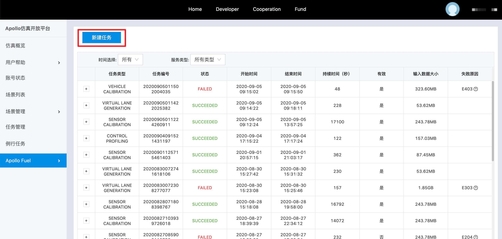
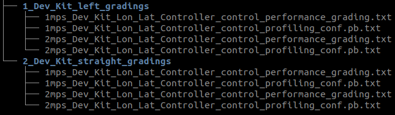
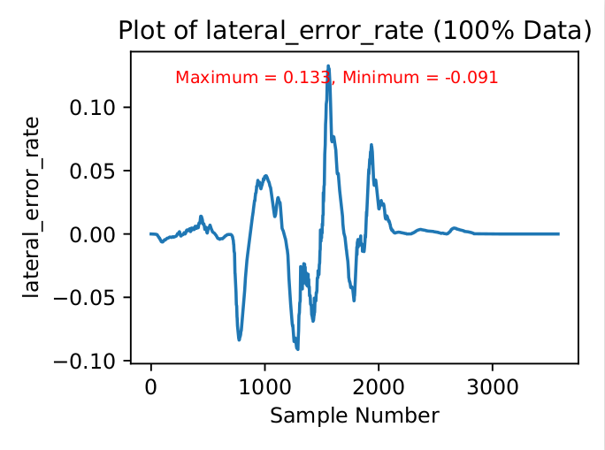
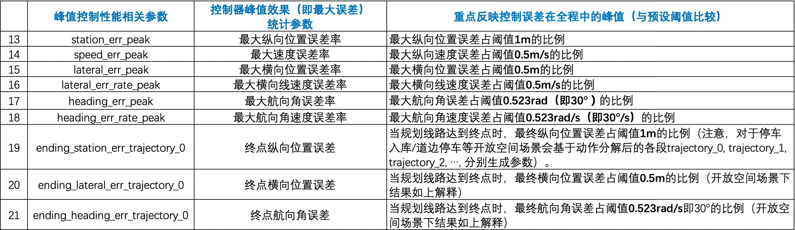

车辆控制评测分析云服务的应用¶
概览¶
车辆控制评测云服务主要是根据解析自动驾驶的路测数据，对车辆的控制效果进行评价评分，了解车辆的控制效果，通过多维度的评分结果，能够展现出一个全面、客观的车辆控制评价结果。
前提条件¶
车辆控制评测是根据车辆自动驾驶的数据来进行控制评分评测，因此需要车辆完成车辆闭环自动驾驶，可以是循迹自动驾驶，也可以是带感知的自动驾驶。因此需要最少完成以下前提步骤：
主要步骤¶
评测数据采集
控制评测任务提交
结果分析
数据采集¶
数据记录¶
完成一次或多次自动驾驶（循迹/感知闭环），并记录数据包。
数据检查¶
在上传需要控制评测的数据前，一定要检查数据包内是否包含评测所需的channel，否则会造成数据缺少相关通道的信息而造成评测结果失败。
控制评测需要检查的数据至少包含以下channel信息，才能正确的进行评测：
模块
channel名称
检查项目
Canbus
/apollo/canbus/chassis确保能正常输出底盘数据
Control
/apollo/control确保能正常输出控制信息数据，该数据需要启动自动驾驶后才能获得
Planning
/apollo/planning确保能正常输出规划信息
Localization
/apollo/localization/pose确保能正常输出位置数据
GPS
apollo/sensor/gnss/best_pose确保
sol_type为NARROW_INT通过使用
cyber_recorder命令来检查采集数据内是否存在上述channel的数据：
cyber_recorder info xxxxxx.record.xxxxx
如下图所示，可以看到上述表格内对应
channel的messages数据不为0，说明数据有效。

控制评测云服务任务提交¶
文件夹结构要求¶
1. 上传预处理后的数据至BOS¶
在上传数据之前，请注意以下几点：
1）请将数据按照如下文件夹结构进行放置：

2）Origin Folder一般是BOS的根目录，本例中task001目录是在BOS根目录下创建的（根目录：登录BOS存储服务器后首先看到的目录即为根目录，一般是Bucket name目录）；
3）task001、task002...代表一次评测任务的文件夹，即每提交一次评测任务时，只能输入一个task目录的路径地址，云端会对该文件内的数据进行分析评分，一个task文件内可以包含多个车辆文件夹，在一次任务提交文件夹内可以包含多个车辆；task001如果在BOS根目录，则提交任务时，只需要填写输入目录路径为task001；如果在其它目录下，则需要填写输入目录路径为从根目录开始的绝对路径，如xxx/task001；
4） Vehicle1、Vehicle2...代表评测的车辆文件夹，可以根据实际情况，按照车辆名称+编号的形式命名，如devkit01、devkit02等。每一个Vehicle文件夹下包含评测自动驾驶数据文件夹和该车辆的配置文件。
**需要注意：**自动驾驶数据文件夹下需要有2层子文件夹，record数据文件放在第二层的文件夹内，如上图文件夹结构图所示，可以根据自动驾驶的场景不同，分成straight（直行）、left（左转）、right（右转）……，每一个场景下也可以根据速度等维度区分，如1m/s、2m/s、3m/s ……，速度维度的文件夹内即是该场景速度条件下的自动驾驶数据。
5） Configuration File即为vehicle_param.pb.txt（车辆配置文件），该文件在apollo/modules/calition/data/dev_kit文件夹内，将该文件夹下的vehicle_param.pb.txt拷贝至BOS对应的车辆控制评测文件夹下，例如上图Vehicle2文件夹内；
6）总结上述文件夹结构：
BOS根目录 -> 任务文件夹 -> 车型文件夹 -> 具体的自动驾驶数据包 + vehicle_param.pb.txt
2. 提交控制评测任务数据至BOS¶
首先进入Apollo云服务任务页面，选择使用百度账号登录，在左侧框中选择Apollo Fuel-->任务，点击新建任务，然后在下拉框内选择控制评测，然后输入相应要评测的数据路径，在输入数据路径中填写到根目录，在本示例中填写为task001。如下图所示：




3. 获取评测结果¶
评测任务完成后，会在注册的邮箱（与商务联系确定）中收到2封结果邮件，分别是控制评分结果（Grading results)和数据图表展示邮件（Visualization results）。
评分结果邮件

我们可以看到，评分邮件结果，会根据task->vehicle这一级目录下的第一级文件目录来分别生成对应的评分结果，即根据前述文件结构中
straight（直行）、left（左转）来分类生成的结果，下载评分结果附件后，可以看到具体的评测附件内容，如下图所示：
其中，各组目录（
1_Dev_Kit_left_gradings和2_Dev_Kit_straight_gradings）下的1mps_Dev_Kit_Lon_Lat_Controller_control_performance_grading.txt和2mps_Dev_Kit_Lon_Lat_Controller_control_performance_grading.txt是评分结果文件，1mps_Dev_Kit_Lon_Lat_Controller_control_profiling_conf.pb.txt和2mps_Dev_Kit_Lon_Lat_Controller_control_profiling_conf.pb.txt是评分对应的配置文件，这个文件目前是默认设定的，不可修改，主要是定义了各个评分指标的评价基准。打开其中一个评分结果文件，如
1_Dev_Kit_left_gradings/1mps_Dev_Kit_Lon_Lat_Controller_control_performance_grading.txt，我们可以看到相应的评价情况，评价分数主要以均方根的结果展示，按百分数显示，如下图所示：
数据图表展示邮件

数据图表展示的附件与评分附件相同，主要根据上述各评分结果对应的数据包进行相应的数据展示，图表附件如下图所示：

图表附件是pdf文件，文件内描述了上述评价指标的对应真实数据变化过程（自动驾驶过程中），从而方便直观的查看各指标的变化情况，还会针对一些数据变化较大的指标，进行90%的数据描绘，横轴代表数据的数值，纵轴代表数据的数量；如果是
100%data描绘，则会展示该指标随采样时间轴的变化情况，即描述了自动驾驶过程中的真实变化情况。

以上只是2张图表的示例图，图表结果内展示约50张图表，数据展示量非常丰富，方便开发者对控制过程的数据变化进行查看。
评测结果说明¶
控制测评参数主要说明如下：




以下表格与上述表格内容一致，方便复制
序号 |
参数 |
名称 |
说明 |
|---|---|---|---|
平均控制性能相关参数 |
控制器平均效果（即统计平均误差）统计参数 |
重点反映控制误差在全程中的（统计意义上的）平均效果 |
|
1 |
station_err_std |
纵向位置误差率 |
描述规划控制过程中，纵向位置误差均方根 |
2 |
station_err_std_harsh |
纵向位置误差率 |
描述轨迹规划纵向加速度大于1m/s2时，纵向位置误差率 |
3 |
speed_err_std |
纵向速度误差率 |
描述规划控制过程中，纵向速度误差平方根 |
4 |
speed_err_std_harsh |
纵向速度误差率 |
描述轨迹规划纵向加速度大于1m/s2时，速度误差均方根 |
5 |
lateral_err_std |
横向位置误差率 |
转向过程中，车辆横向位置误差的均方根 |
6 |
lateral_err_std_harsh |
横向位置误差率 |
描述转向过程中，规划轨迹曲率大于0.05 (1/m)，横向误差的均方根 |
7 |
lateral_err_rate_std |
横向线速度误差率 |
描述转向过程中，横向线速度误差的均方根 |
8 |
lateral_err_rate_std_harsh |
横向线速度误差率 |
描述转向过程中，规划轨迹曲率大于0.05 (1/m)，横向线速度误差的均方根 |
9 |
heading_err_std |
航向误差率 |
航向误差均方根 |
10 |
heading_err_std_harsh |
航向误差率 |
规划轨迹曲率大于0.05 (1/m)，航向误差均方根 |
11 |
heading_err_rate_std |
航向角速度误差率 |
航向角速度误差均方根 |
12 |
heading_err_rate_std_harsh |
航向角速度误差率 |
规划轨迹曲率大于0.05 (1/m)，航向误差均方根 |
峰值控制性能相关参数 |
控制器峰值效果 |
重点反映控制误差在全程中的峰值 |
|
13 |
station_err_peak |
最大纵向位置误差率 |
最大纵向位置误差占阈值1m的比例 |
14 |
speed_err_peak |
最大速度误差率 |
最大纵向速度误差占阈值0.5m/s的比例 |
15 |
lateral_err_peak |
最大横向位置误差率 |
最大横向位置误差占阈值0.5m的比例 |
16 |
lateral_err_rate_peak |
最大横向线速度误差率 |
最大横向线速度误差占阈值0.5m/s的比例 |
17 |
heading_err_peak |
最大航向角误差率 |
最大航向角误差占阈值0.523rad（即30°）的比例 |
18 |
heading_err_rate_peak |
最大航向角速度误差率 |
最大航向角速度误差占阈值0.523rad/s（即30°/s）的比例 |
19 |
ending_station_err_trajectory_0 |
终点纵向位置误差 |
当规划线路达到终点时，最终纵向位置误差占阈值1m的比例（注意，对于停车入库/道边停车等开放空间场景会基于动作分解后的各段trajectory_0, trajectory_1, trajectory_2, …, 分别生成参数） |
20 |
ending_lateral_err_trajectory_0 |
终点横向位置误差 |
当规划线路达到终点时，最终横向位置误差占阈值0.5m的比例（开放空间场景下结果如上解释） |
21 |
ending_heading_err_trajectory_0 |
终点航向角误差 |
当规划线路达到终点时，最终航向角误差占阈值**0.523rad/s(即30°/s)的比例（开放空间场景下结果如上解释） |
体感评估相关参数 |
体感较差的加速度占比 |
重点反映与体感紧密相关的指标超标（与预设合适体感区间比较）次数占比 |
|
22 |
acc_bad_sensation |
终点航向角误差 |
纵向加速度大于4m/s2的次数在全程统计数据中的占比 |
23 |
jerk_bad_sensation |
终点航向角误差 |
纵向加加速度大于2m/s3的次数在全程统计数据中的占比 |
24 |
lateral_acc_bad_sensation |
体感较差的横向加速度占比 |
横向加速度大于4m/s2的次数在全程统计数据中的占比 |
25 |
heading_acc_bad_sensation |
体感较差的航向角角加速度占比 |
航向角的角加速度大于π rad/s2的次数在全程统计数据中的占比 |
26 |
heading_jerk_bad_sensation |
体感较差的航向角占比 |
航向角的角加加速度大于π/2 rad/s3的次数在全程统计数据中的占比 |
控制使用度相关参数 |
各项控制操作使用量统计参数 |
重点反映控制模块发出命令、使用时间等指标的使用度 |
|
27 |
throttle_control_usage |
油门控制使用率 |
油门控制指令均方根 |
28 |
throttle_control_usage_harsh |
油门控制使用率 |
加速度大于1m/s2的油门控制指令均方根 |
29 |
brake_control_usage |
刹车控制使用率 |
刹车控制指令均方根 |
30 |
brake_control_usage_harsh |
刹车控制使用率 |
加速度大于1m/s2的刹车控制指令均方根 |
31 |
steering_control_usage |
转向控制使用率 |
转角控制指令均方根 |
32 |
steering_control_usage_harsh |
转向控制使用率 |
加速度大于1m/s2的转角控制指令均方根 |
33 |
total_time_usage |
控制模块计算时间平均比例 |
控制模块实际消耗计算时间占每个控制时间周期的比例（平均值） |
34 |
total_time_peak |
控制模块计算时间峰值比例 |
控制模块实际消耗计算时间占每个控制时间周期的比例（最大值） |
35 |
total_time_exceeded_count |
控制模块计算时间超限次数占比 |
控制模块实际消耗计算时间超过控制时间周期的次数在在全程统计数据中的占比 |
车辆检测校准参数 |
利用数据测算校准车辆特征的相关参 |
重点反映对于车辆底盘、定位模块特征值的测算或校准 |
|
36 |
throttle_deadzone_mean |
油门无效区间 |
油门踏板平均响应范围（油门命令高于此区间，油门机械系统才开始响应） |
37 |
brake_deadzone_mean |
刹车无效区间 |
刹车踏板平均响应范围（刹车命令高于此区间，刹车机械系统才开始响应） |
38 |
pose_heading_offset_std |
航行角校准误差率 |
利用位置变化趋势计算航向角，并与定位模块提供的航向角做差，所得角误差（除以π所得比例）的均方根 |
39 |
pose_heading_offset_peak |
最大航行角校准误差率 |
利用位置变化趋势计算航向角，并与定位模块提供的航向角做差，所得角误差（除以π所得比例）的最大值 |
控制事件统计参数 |
特殊控制事件的相关参数 |
重点反映全程出现的特殊控制事件如重新规划、控制错误等的统计，以及综合性能评估 |
|
40 |
replan_trajectory_count |
重新规划次数占比 |
因误差过大造车的路线重新规划的次数，在全程统计数据中的占比 |
41 |
control_error_code_count |
控制错误次数占比 |
出现控制错误(error code)的次数, 在全程统计数据中的占比 |
42 |
weighted_score |
综合性能评分 |
（仅供参考）综合抽取控制效果、体感用度、特殊控制时间等重要参数，并加权后的权值得分 |